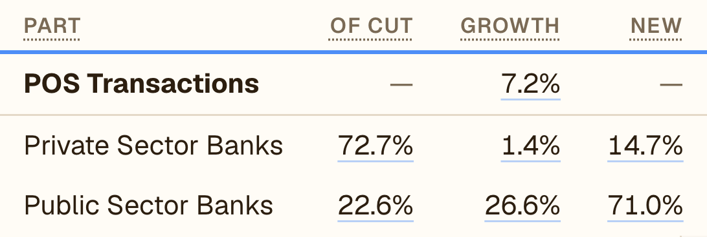

India Credit Lens · Sep 2026 · Cards
Government banks are taking the card rupees
1
More swipes, slower rupeesVolume and value have split.
2
Public banks take the growthFrom a much smaller share.
3
SBI up, HDFC downWith a high base to name.
1 · Credit cards at shops
We keep swiping. The rupees aren't keeping up

OF CUT = share of card value · NEW = share of the year's growth
September alone: value growth 9.1% to 7.2%. Swipes 23.5% to 23.4%.
2 · Public sector banks
A small share, most of the growth
They grew 26.6%. Private banks, with 72.7% of the value, grew 1.4%.
September alone: their share of the growth went from 51.0% to 71.0%.
3 · By bank
SBI up, HDFC Bank down
A year ago HDFC Bank was growing 36.1%, so part of this is a high base.
September alone: HDFC Bank 0.9% to −6.7%. SBI 22.3% to 25.2%.
4 · Small finance banks
Few cards, a big slice of the new ones
26.94 lakh cards, up 117.4% in a year.
September alone: share of new cards 11.5% to 12.3%.
India Credit Lens · Sep 2026 · Cards
Why are the two moving so differently?
Private banksswipes +21.6%, value +1.4%Public banksswipes +13.6%, value +26.6%
Corporate cards? Bigger tickets at public banks? Small spends moving elsewhere? We haven't tested a cause yet. What are you seeing?